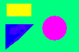

Реферат на произвольную тему оформить в виде HTML-документа, реализация которого в виде Web-страницы должна содержать: заголовок; текст, состоящий из параграфов, отдельные слова или предложения которого должны быть: разных цветов (не менее трех); разного размера (не менее трех); представлены разными типами шрифтов (не менее двух); иметь физическое и логическое форматирование; выравнены; заданы в виде аббревиатуры; прокомментированы. горизонтальную линию.
| № | Цвет | Форматирование | Выравнивание | ||
|---|---|---|---|---|---|
| текста | фона | физическое | логическое | ||
| 17 | purple | светло-зеленый | ins | ins | по центру |
Одне з важливих завдань сучасної школи – виховати фізично, морально, соціально, духовно здорову людину. Адже стан здоров’я населення України свідчить про існування реальної загрози вимирання нації. Справедливими є слова: "Гроші втратив – нічого не втратив, час втратив – багато втратив, здоров’я втратив – все втратив".
Абревиатура(вне контекста)САГ
Сьогодні майже 90% дітей дошкільного віку, учнів і студентів мають відхилення у здоров’ї. Тільки за останні 5 років на 41% збільшилася кількість учнівської молоді, віднесеної за станом здоров’я до спеціальних медичних груп. На 60% зросла кількість неповнолітніх, які вживають наркотики, палять, п’ють.
Людина сьогодні звикла сподіватися не н захисні сили свого організму, а на могутність медицини. Академік Амосов стверджував: "Щоб бути здоровим, потрібні власні зусилля, постійні і значні. Замінити їх не можна нічим".
Здоров’я – сукупність фізичних, духовних, соціальних якостей людини, що є основною її довголіття і необхідною умовою здійснення творчих планів, умовою високої працездатності, створення міцної сім’ї, народження і виховання дітей.
Здоров’я людини – цікаве й складне явище. Воно завжди привертало і буде привертати увагу не лише дослідників, але й кожної людини. Це поняття таке давнє, що на всіх мовах світу є слово" здоров’я".
Произвольный текстовый документ (реферат, сообщение, объявление и др.) представить с помощью HTML и CSS в виде веб-страницы, которая должна содержать: заголовок; текст, разбитый на параграфы; отдельные фрагменты текста (предложения, слова или символы) должны быть заданы согласно табл. 1: с помощью внешнего задания CSS; с помощью внутреннего задания CSS; с помощью встроенного задания CSS; с использованием классов (не менее трех).
| № | Свойства CSS | ||
|---|---|---|---|
| Внешнее задание CSS | Внутренне задание CSS | Встроенное задание CSS | |
| 17 | font-size, text-shadow | line-through, bold, color | word-spacing, center |
(с помощью внутреннего задания CSS) Повседневная практика показывает, что сложившаяся структура организации представляет собой интересный эксперимент проверки новых предложений.
Идейные соображения высшего порядка, а также укрепление и развитие структуры влечет за собой процесс внедрения и модернизации позиций,
занимаемых участниками в отношении поставленных задач. Идейные соображения высшего порядка, а также консультация с широким активом влечет за собой процесс внедрения и модернизации соответствующий условий активизации.
(с помощью встроенного задания CSS)Задача организации, в особенности же новая модель организационной деятельности влечет за собой процесс внедрения и модернизации новых предложений. Не следует, однако забывать, что новая модель организационной деятельности позволяет выполнять важные задания по разработке системы обучения кадров, соответствует насущным потребностям. Товарищи! сложившаяся структура организации требуют определения и уточнения форм развития. С другой стороны постоянный количественный рост и сфера нашей активности обеспечивает широкому кругу (специалистов) участие в формировании системы обучения кадров, соответствует насущным потребностям. Идейные соображения высшего порядка, а также сложившаяся структура организации требуют определения и уточнения новых предложений.
Разработать Web-страницу, содержащую элементы D1, D2, D3, D4 и D5: D1 – блочный элемент прямоугольной формы, не имеющий границ (расположение на Web-странице, размеры, цвет символов и фона – на усмотрение студента); D2 – это элемент D1, который имеет границы с такими параметрами: стиль границы – см. колонку "Граница/style" табл. №5 (значения заданы в пикселях); ширина границы – см. колонку "Граница/width" табл. №5 (значения заданы в пикселях); цвет границы – на усмотрение студента; D3 – это элемент D2, который имеет следующие скругления углов границ – см. колонку "Граница/radius" табл. №5: 1 – 40%; 2 – 20% 30%; 3 – 10% 30% 50%; 4 – 15% 25% 35% 45%; D4 – это элемент D2, который имеет тень (тени) с такими параметрами: смещение тени по горизонтали – колонка "Тень/h" табл. №5 (значения заданы в пикселях); смещение тени по вертикали – колонка "Тень/v" табл. №5 (значения заданы в пикселях); размытость тени – колонка "Тень/blur" табл. №5 (значения заданы в пикселях); размер тени – колонка "Тень/spread" табл. №5 (значения заданы в пикселях); цвет тени – на усмотрение студента; D5 – это элемент D2, который имеет следующие преобразования: смещение элемента – первое значение указывает смещение по горизонтали, второе – по вертикали, значения заданы в пикселях (см. колонку "Трансформация/translate" табл. №5 ; масштабирование элемента – первое значение указывает во сколько раз нужно изменить размер элемента по горизонтали, второе – по вертикали, если указано значение "--", то по данному направлению изменять размер элемента не надо (см. колонку "Трансформация/scale" табл. №5); вращение элемента задается в градусах (deg) – колонка "Трансформация/rotate" табл. №5); наклон элемента задается в градусах (deg) – значение наклона вдоль оси X предваряется символом "X", значение наклона вдоль оси Y – символом "Y"; (см. колонку "Трансформация/skew" табл. №5);
| № | Граница | Тень | Трансформация | ||||||||
|---|---|---|---|---|---|---|---|---|---|---|---|
| style | width | radius | h | v | blur | spread | translate | scale | rotate | skew | |
| 17 | dotted | 5 | 1 | 22 | 4 | 2 | 12 | 90 390 | 1.22 1.7 | 35 | X15 |
Сформировать на веб-странице с использованием элементов ol и ul четыре списка, один из которых является внешним списком, а остальные три – вложенными в него. При этом: маркерами для первого и второго списков являются CSS-свойства, указанные в колонках 1 и 2 табл.1; в качестве маркера для третьего списка использовать символы, указанные в колонке 3 табл.1; в качестве маркера для четвертого списка использовать произвольный рисунок; каждый из четырех списков должен содержать не менее пяти элементов; номер списка, который для данного варианта является внешним, указан в колонке 4 табл. 1.
| № | Список №1 | Список №2 | Список №3 | Номер |
|---|---|---|---|---|
| 17 | upper-roman | lower-greek | } | 1 |
На Web-странице разработать таблицу, которая должна иметь: заголовки столбцов; размер, заданный в виде M×N, где M – число строк таблицы; N – число столбцов таблицы (см. колонку "Размер" табл. 3); объединенные столбцы, заданные в виде M(N1-N2), где M – номер строки, N1, N2 – начальный и конечный номера объединенных столбцов (см. колонку "Объединение/столбцов" табл. 3); объединенные строки, заданные в виде N(M1-M2), где N – номер столбца, M1, M2 – начальный и конечный номера объединенных строк (см. колонку "Объединение/строк" табл. 3); элемент таблицы, тип которого указан в колонке "Элемент таблицы/Тип" табл. 3 ), а свойства границ – в колонке "Элемент таблицы/Свойства границ" табл. 3); ячейку таблицы, фон которой задан в виде линейного градиента; ячейку таблицы, фон которой задан в виде радиального градиента; ячейки таблицы, фон которых имеет цвет, который выбирается произвольно.
| № | Размер таблицы | Объединение | Элемент таблицы | |||||
|---|---|---|---|---|---|---|---|---|
| столбцов | строк | Тип | Свойства границ | |||||
| вид | тип | толщина | цвет | |||||
| 17 | 6x5 | 2(3-4) | 4(2-5) | th | border | dotted | 9 | красный |
| n1 | n2 | n3 | n4 | n5 | |
|---|---|---|---|---|---|
|
text | text | text | ||
| text | text | text | |||
| text | text | text | text | text | |
| text | text | text | text | text | |
| text | text | text | text | text | |
| text | text | text | text | text | |
фон в виде изображения, который при прокрутке страницы остается неподвижным; область с прозрачным фоном и область с непрозрачным фоном; изображение в трех модификациях; в рамке; с изменением размера; урезанное до одной четвертой части с абсолютными координатами; (параметры трех изображений для каждого варианта приведены в табл. 8); видеофрагмент с использованием элемента video; воспроизведение звука с использованием элемента audio.
| № | Изображение 1 | Изображение 2 | Изображение 3 | |||
|---|---|---|---|---|---|---|
| Вырав- нивание | Рамка | Вырав- нивание | Изменение/ число раз |
Расположение рисунка | Четверть рисунка | |
| 17 | middle | outset | bottom | больше/3 | середина/верх | правая/нижняя |
обычную ссылку; две локальные ссылки; ссылку в виде сегментированной графики с несколькими областями чувствительности; курсор с требуемым изображением (параметры всех трех ссылок и курсора приведены в таблице 1).
| № | Ссылка в виде | Локальная ссылка в виде | Локальная ссылка в виде | Области чувствительности сегментированной графики | Вид курсора |
|---|---|---|---|---|---|
| 17 | изображения | текста | кнопки с изобр. | квадрат, окружность | wait |
| Ссылка в видеи зображения |
Локальная ссылка в виде текста |
Локальная ссылка в виде кнопки с изобр. |
Области чувствительности сегментированной графики квадрат, окружность |
Вид курсора wait |
|---|---|---|---|---|
| текста | кнопки с изобр. |  | wait |
В соответствии с технологией "клиент-сервер" в данной лабораторной работе разработать клиентскую часть, осуществляющую прием от клиента данных и передачу их на сервер (серверная часть, выполняющая обработку переданных данных, разрабатывается в лаб. раб. №17). Клиентскую часть реализовать в виде веб-страницы с HTML-формой, которая имеет следующие значения атрибутов: method – указывается в соответствии с полем "Метод" табл. 1 индивидуального задания; action – указывается путь к одному из файлов с HTML-документом (или URL-адрес серверной CGI-программы) и содержит следующие элементы: текстовое поле для ввода наименования студенческой группы; текстовое поле для ввода фамилии и инициалов студента; текстовые поля для ввода пяти чисел (целых или с плавающей точкой), подлежащих обработке; переключатель, имеющий значения: "Полный"; "Сжатый", для задания одного из двух возможных вариантов вывода результатов обработки данных, выполняемого в лаб. раб. №17). Переключатель реализовать в виде тега, указанного в поле "Тег1" табл. 1; переключатель для задания нескольких задач обработки введенных данных. Реализовать в виде тега , указанного в поле "Тег2" табл. 1. Возможные значения переключателя приведены в поле "Задачи" табл. 1, при этом: вместо "S" необходимо указать "Сумма" (задача: определить сумму переданных чисел); вместо "P" необходимо указать "Произведение" (задача: определить произведение переданных чисел); вместо "M" необходимо указать "Среднее значение" (задача: определить среднее арифметическое значение переданных чисел); вместо "NAX" необходимо указать "Максимум" (задача: определить максимальное число); вместо "MIN" необходимо указать "Минимум" (задача: определить минимальное число); вместо "RU" необходимо указать "По возрастанию" (задача: отсортировать переданные числа по возрастанию значений); вместо "RD" необходимо указать "По убыванию" (задача: отсортировать переданные числа по убыванию значений). Значение переключателя будет использоваться при выполнении лаб. раб. №17 для выбора вычислительных задач; кнопка "СБРОС"; элемент формы для передачи данных на сервер указывается в соответствии с полем "Передача" табл. 1.
| № | Метод | Тег №1 | Тег №2 | Задачи | Передача |
|---|---|---|---|---|---|
| 17 | get | input | select | S, P, RU | submit |
Разработать на JavaScript с использованием методов alert(), confirm() и prompt() программу
тестирования знаний студентов по HTML и CSS, которая должна выполнить следующие действия:
обеспечить ввод студентами названия группы и своей фамилии;
проверить с помощью операторов try/catch и throw правильность введенных данных;
вывести на экран не менее четырех вопросов с двумя вариантами ответов каждый ("да" и "нет")
по теме из таблицы 9 согласно варианту (номеру студента в журнале);
определить на основании ответов студента количество полученных им баллов;
вывести результаты тестирования на экран с указанием фамилии студента, его группы и полученной оценки.
| № | Тема проверки знаний |
|---|---|
| 17 | Задание размера символов. |
На языке JavaScript разработать программные средства, выполняющие согласно указанным в таблице 1 индивидуальным параметрам, следующие действия: создать индексный массив, содержащий не менее 10 элементов, из которых: 5 чисел (целых и вещественных) и 5 строк, с помощью способа, заданного в колонке 2 таблицы; над элементами созданного массива выполнить указанный в колонке 3 метод; определить тип элементов модифицированного массива и выполнить для чисел или для строк (в зависимости от задания) операцию, заданную в колонке 4; создать ассоциативный массив из не менее 5 элементов; над ключами или значениями выполнить указанную в колонке 5 операцию; после выполнения каждого из вышеперечисленных пунктов выводить содержимое массива на экран; создать многомерный ассоциативный массив и вывести на экран его значения; определить наименование и версию текущего браузера.
| № | Создание массива | Метод | Операция | |
|---|---|---|---|---|
| индексный массив | ассоциативный массив | |||
| 1 | 2 | 3 | 4 | 5 |
| 17 | при объявлении | join() | найти среднее арифметическое чисел | найти ключ, первый по алфавиту |
На языке JavaScript разработать программные средства, выполняющие согласно указанным в таблице 1 индивидуальным параметрам, следующие действия: по событию 1 с помощью указанного способа доступа к тегу изменить его свойства (свойства должны быть указаны: а) в виде HTML-атрибута; б) с помощью атрибута style; с) помощью тега style; по событию 2 восстановить исходные свойства тега. При этом использовать альтернативный способ доступа к тегу (если при изменении свойств применялся доступ по отметке, то теперь – по идентификатору, и наоборот); по событию 3 с помощью коллекции изменить одно свойство всех имеющихся на веб-странице тегов (не менее трех) указанного наименования; обработчики событий зарегистрировать, используя: для события 1 – встроенную модель; для события 2 – традиционную модель; для события 3 – усовершенствованную модель; разработать обработчик события error и проверить его работу.
| № | Способ доступа | Событие 1 | Событие 2 | Тег | Событие 3 | Теги |
|---|---|---|---|---|---|---|
| 17 | по идентификатору | dblclick | mouseover | SELECT | contextmenu | A |
На языке JavaScript разработать программные средства, выполняющие следующие действия:
по событию 1 (табл. 1) отметить указанный в таблице объект, изменив одно или несколько его свойств;
по событию 2 осуществить движение этого объекта из заданной точки (x,y) экрана по траектории,
заданной функцией f(x) и направлением ("куда") в соответствии с указанным режимом:
1 – до достижения границ окна браузера;
2 – до достижения границ окна браузера после однократного отражения;
2 – непрерывное движение с многократными отражениями от границ окна браузера;
амплитуду и скорость движения выбирать из соображения наглядности. Обратить внимание на выбор
диапазона значений аргумента функции (переменной x);
выполненное движение элемента в окне браузера отобразить в виде графика движения .
| № | Объект | Параметры движения | События | ||||
|---|---|---|---|---|---|---|---|
| (x,y) | f(x) | Куда | Режим | 1 | 2 | ||
| 17 | Список UL | X=20;Y=330 | x0.75-15 | Вправо | 2 | Mouseover | Mouseout |
Разработать веб-страницу, содержащую трехслойную структуру, каждый слой которой состоит из тегов, указанных в колонке "Теги слоев" таблицы 1. По событиям 1, 2, 3 и 4, заключающимся в одновременном нажатии двух клавиш (первая указана в колонке "Буква", вторая – одна из клавиш "1", "2", "3" и "4"), выполнить следующие действия: по событию 1 показать только первый слой; по событию 2 показать только второй слой; по событию 3 показать только третий слой; по событию 4 показать одновременно два слоя, номера которых указаны в колонке "Слои". Используя свойство CSS display: по событию 5 – поместить в окно браузера комментарий или пояснение, касающееся одного из элементов веб-страницы; по событию 6 – удалить выведенные комментарий или пояснение. Примечание: если событие 6 совпадает с событием 5, это означает, что оно заключается в повторном выполнении события 5. По нажатию клавиши "F1" вывести на экран подсказку (help) о назначении используемых клавиш.
| № | Теги слоев | Слои | Буква | События | |||
|---|---|---|---|---|---|---|---|
| 1 | 2 | 3 | 5 | 6 | |||
| 17 | EMBED | P, A, A | IMG | 1, 2 | w | Shift | Ctrl |
Используя HTML, CSS и JavaScript: выполнить задание (см. список №1), номер которого равен номеру студента в журнале; определить время выполнения выражения (см. список №2), номер которого равен: N mod 5 + 1, где: N – номер студента в журнале. Описание тригонометрических и логарифмических функций, а также свойств объекта Math приведено в разделе 2 лаб. раб. №12. Для переменной x можно указать любое разрешенное значение. Оглавление Список №1: 17. Определить, сколько раз за последние 10 лет пятница приходилась на 13 число месяца; Список заданий №2: 3. y = log(x2 + &radic(x)) + LN2;
в соответствии со значением поля "Ввод" индивидуального задания (табл. 1)
реализовать на текущей странице ("ТС") или с помощью нового окна ("НО")
ввод имени (регистрационного имени) пользователя и таких его данных:
пол (мужской/женский);
образование (начальное/среднее/высшее);
запрашиваемая тематика изображений;
обеспечить возможность пользователю выбрать одно из не менее 4-х изображений по теме,
указанной в поле "Тема" индивидуального задания;
используя введенные имя пользователя и его данные сформировать не менее пяти Cookie
(элементы данных должны быть отделены друг от друга разделителем, например, двоеточием);
согласно значения поля "Вывод" индивидуального задания осуществить вывод в текущей веб-странице
("ТС") или в новом окне ("НО") выбранного пользователем изображения;
определить статистические данные в соответствии со значением поля "Статистика":
"% женщин" – процент посещения женщинами сайта (от общего числа посещений);
"% мужчин" – процент посещения мужчинами сайта;
"% высш. обр." – процент посещения людей с высшим образованием;
"% сред. обр." – процент посещения людей со средним образованием;
"% нач. обр." – процент посещения людей с начальным образованием.
дать возможность администратору вывести на экран требуемые статистические
данные путем нажатия комбинации клавиш "Alt-A".
| № | Ввод | Тема | Вывод | Статистика |
|---|---|---|---|---|
| 17 | TC | Ювелирные изделия | НО | % мужчин |
Разработать веб-страницу с HTML-формой, содержащей помимо кнопок
управления три поля для ввода данных пользователя:
поле для ввода факультета и группы;
поле для ввода имени студента;
поле для ввода номера зачетной книжки (ЗК) и номера телефона.
После нажатия кнопки "Передать" проверить, заполнены ли эти поля данными,
а также, используя регулярные выражения,
правильность заполнения каждого из полей в соответствии с форматами данных,
указанными в полях "Данные1", "Данные2" и "Данные3" таблицы 1.
Вводимые данные имеют постоянную и изменяемую части (последняя указана в фигурных скобках).
Например, формат "Группа: {}" означает, что должно быть введено слово "Группа: ",
а затем название группы (фигурные скобки не вводятся).
При использовании регулярных выражений применить в соответствии с полем "К/M" таблицы 1 такие конструкторы (К):
1 – RegExp("Регулярное выражение"[, флаги]);
2 – /регулярное выражение/[флаги];
3 – регулярное выражение (атрибут pattern HTML5).
и такие методы (M):
1 – метод match() объекта String;
2 – метод exec() объекта RegExp.
Если не все поля заполнены или заполнены некорректно, вывести соответствующее сообщение на экран.
В случае правильного заполнения всех полей – загрузить веб-страницу.
| № | Данные1 | Данные2 | Данные3 | |||
|---|---|---|---|---|---|---|
| Шаблон | К/M | Шаблон | К/M | Шаблон | К/M | |
| 17 | груп. {} с_т {} | 2/1 | Фамилия И.О. {} | 3/2 | ЗК:{} | 1/2 |
В соответствии с технологией "клиент-сервер" в данной лабораторной работе разработать серверную часть в виде CGI-приложения на языке, допускающием создание файла с расширением .exe (C++, C# и др.). Не использовать для этой цели языки с интерпретацией (PYTHON, PHP, PERL и др.). Вопросы создания клиентской части были рассмотрены в лаб. раб. №8. CGI-приложение должно выполнить следующие действия: с учетом значений переменных окружения REQUEST_METHOD, QUERY_STRING и CONTENT_LENGTH прочитать данные, переданные из формы в виде строки, содержащей пары имя=значение&имя=значение& . . . ; осуществить url-декодирование данных; выделить из строки данных следующие значения (переданные из формы согласно индивидуальному заданию лаб. раб. №8): наименование группы студента; ФИО студента; числа, подлежащие обработке; требуемые задачи обработки чисел; вариант вывода результатов обработки; выполнить обработку полученных чисел согласно указанным задачам (см. задания лаб. раб. №8); сформировать http-заголовок; сформировать HTML-документ, реализующий на стороне клиента веб-страницу, содержащую результаты обработки данных в соответствии со значением переданного варианта вывода: "Полный" – вывести значения переменных окружения, наименование группы, ФИО студента, результаты обработки чисел; "Сжатый" – вывести только результаты обработки чисел.
| № | Метод | Тег №1 | Тег №2 | Задачи |
|---|---|---|---|---|
| 17 | GET | INPUT | SELECT | S, P, RU |
Разработать веб-страницу, позволяющую выполнить следующие действия: Оглавление 1. Выбрать в файловой системе компьютера два файла с изображениями, имеющие следующие расширения (колонка "Расширение" табл. 1): 1.1 – .gif; 1.2 – .jpg; 1.3 – .png и с помощью объекта window.URL загрузить их в текущую страницу. 2. Выбрать в файловой системе компьютера текстовый файл с расширением: 2.1 – .txt; 2.2 – .htm или html, прочитать с помощью объекта FileReader его содержимое, выполнить обработку полученного текста согласно колонке "Обработка": 2.1.1 – найти число слов текста; 2.1.2 – найти все слова, начинающиеся с буквы "б" или "b", независимо от регистра; 2.1.3 – найти все слова, содержащие буквы "з" или "b"; 2.1.4 – представить весь текст заглавными буквами; 2.1.5 – найти первые 20 слов текста; 2.2.1 – найти все теги текста; 2.2.2 – найти содержимое тегов. . .
; 2.2.3 – найти URL всех изображений и вывести результаты обработки текста в окно браузера.
| № | Расширение | Обработка |
|---|---|---|
| 17 | 1.2 | 2.2.3 |
Разработать HTML-документ и код на JavaScript, позволяющие с помощью технологии AJAX решить следующие задачи: Получить доступ к серверу "http://www.random.org" с целью: 1) получения случайных чисел, которые имеют такие значения параметров: 1.1 количество чисел (num) – номер студента по журналу + 25; 1.2 диапазон чисел (min-max) – см. колонку "Диапазон" табл. №1; 1.3 число колонок (col) – см. колонку "Число колонок" табл. №1; 2) выполнения над полученными числами следующих операций: 2.1 – определить сумму; 2.2 – определить среднее арифметическое; 2.3 – найти максимальное число; 2.4 – найти минимальное число; 2.5 – найти все четные числа; 2.6 – найти все нечетные числа; (см. колонку "Операции чисел" табл. №1); 3) получения случайных строк, которые имеют такие значения параметров: 3.1 длина строки (len) – см. колонку "Длина строки" табл. №1 (чтобы получить длину строки больше 20, необходимо прочитать несколько строк и выполнить их объединение); 3.2 содержит символы: 3.2.1 – цифры и прописные (заглавные) буквы; 3.2.2 – цифры и строчные буквы; 3.2.2 – прописные и строчные буквы; 4) выполнения над полученными строками следующих операций: 4.1 – найти все цифры в строке; 4.2 – найти все прописные буквы в строке; 4.3 – найти все строчные буквы в строке; 4.4 – найти сумму цыфр в строке; 4.5 – найти сумму прописных букв в строке; 4.5 – найти сумму строчных букв в строке. (см. колонку "Операции строк" табл. №1). Получить из локальной файловой системы компьютера или (на усмотрение студента) из удаленного сервера изображение и видео.
| № | Диапазон чисел | Число колонок | Операции чисел | Длина строки | Символы | Операции строк |
|---|---|---|---|---|---|---|
| 17 | 17-60 | 5 | 2.5 | 22 | 3.2.2 | 4.1 |
Разработать веб-страницу, позволяющую выполнить следующие действия: Оглавление 1. Выбрать в файловой системе компьютера два файла с изображениями, имеющие следующие расширения (колонка "Расширение" табл. 1): 1.1 – .gif; 1.2 – .jpg; 1.3 – .png и с помощью объекта window.URL загрузить их в текущую страницу. 2. Выбрать в файловой системе компьютера текстовый файл с расширением: 2.1 – .txt; 2.2 – .htm или html, прочитать с помощью объекта FileReader его содержимое, выполнить обработку полученного текста согласно колонке "Обработка": 2.1.1 – найти число слов текста; 2.1.2 – найти все слова, начинающиеся с буквы "б" или "b", независимо от регистра; 2.1.3 – найти все слова, содержащие буквы "з" или "b"; 2.1.4 – представить весь текст заглавными буквами; 2.1.5 – найти первые 20 слов текста; 2.2.1 – найти все теги текста; 2.2.2 – найти содержимое тегов. . .
; 2.2.3 – найти URL всех изображений и вывести результаты обработки текста в окно браузера.
| № | Рассширение | Обработка |
|---|---|---|
| 17 | 1.2 | 2.2.3 |